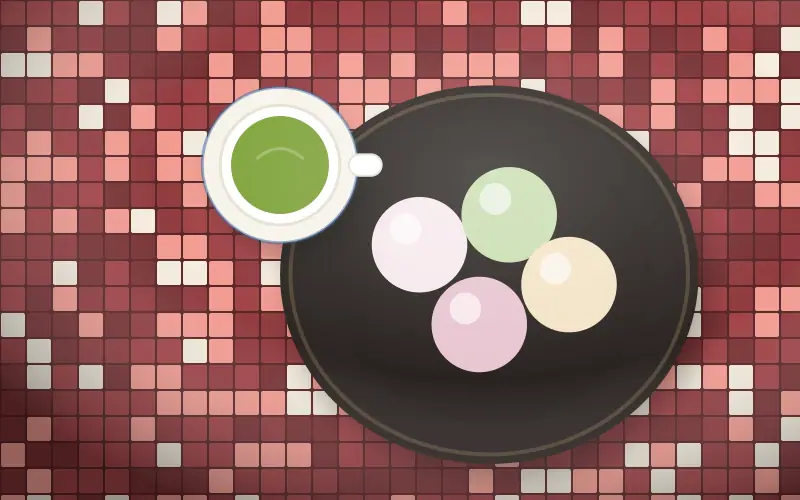
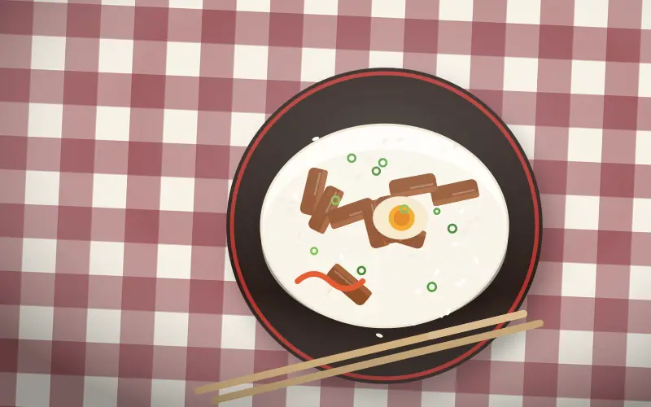
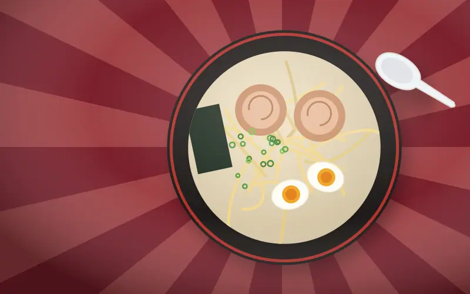
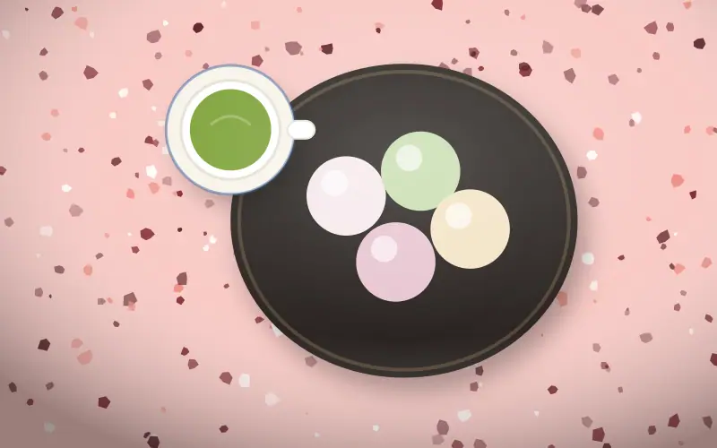
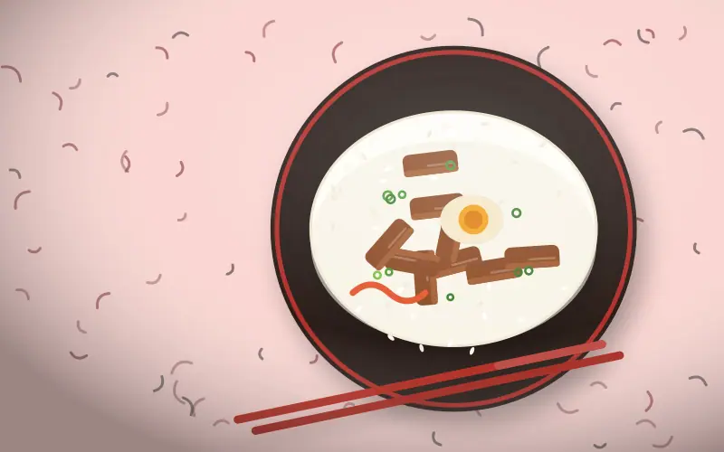
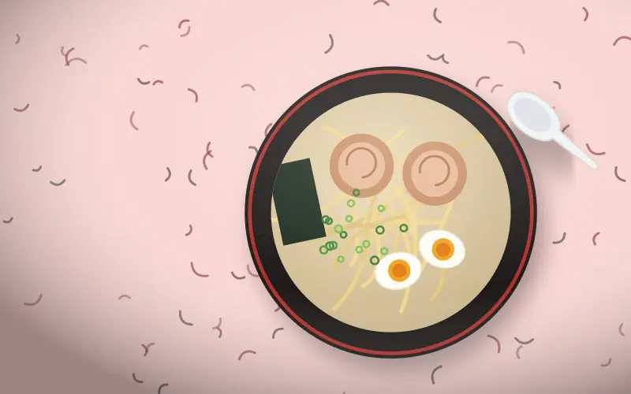

Cheap japanese in Hong Kong 日式
15 places, from HK$38, ranked by Value Score.
 Hometown Teahouse一休 · Cheung Chau~$38
Hometown Teahouse一休 · Cheung Chau~$38 Yoshinoya (Kwai Chung)吉野家（葵涌） · Kwai Chung$48
Yoshinoya (Kwai Chung)吉野家（葵涌） · Kwai Chung$48  Yoshinoya (North Point)吉野家（北角） · North Point$50
Yoshinoya (North Point)吉野家（北角） · North Point$50 
Sukiya (Kowloon Bay)すき家（九龍灣） · Kowloon Bay$52 Yoshinoya (Tai Po)吉野家（大埔） · Tai Po$46
Yoshinoya (Tai Po)吉野家（大埔） · Tai Po$46  Sukiya (Mong Kok)すき家（旺角） · Mong Kok~$52
Sukiya (Mong Kok)すき家（旺角） · Mong Kok~$52 Yoshinoya (Sheung Shui)吉野家（上水） · Sheung Shui$58
Yoshinoya (Sheung Shui)吉野家（上水） · Sheung Shui$58  Yoshinoya (Hung Hom)吉野家（紅磡） · Hung Hom$58
Yoshinoya (Hung Hom)吉野家（紅磡） · Hung Hom$58 
Yoshinoya (Happy Valley)吉野家（跑馬地） · Happy Valley$48
Butao Ramen (Central)豚王（中環） · Central~$98 Ichiran (Causeway Bay)一蘭（銅鑼灣） · Causeway Bay~$105
Ichiran (Causeway Bay)一蘭（銅鑼灣） · Causeway Bay~$105
Ichiran (Tsim Sha Tsui)一蘭（尖沙咀） · Tsim Sha Tsui~$123
Ajisen Ramen (Tsim Sha Tsui)味千拉麵（尖沙咀） · Tsim Sha Tsui$78
Ajisen Ramen (Stanley)味千拉麵（赤柱） · Stanley$78 Ajisen Ramen (Tuen Mun)味千拉麵（屯門） · Tuen Mun$82
Ajisen Ramen (Tuen Mun)味千拉麵（屯門） · Tuen Mun$82 More guides
Best meals under HK$50Cheap eats under HK$30Best value for moneyLate-night cheap eatsHidden gemsCheap breakfast in Hong KongRoast Meats 燒味Cha Chaan Teng 茶餐廳Dim Sum 點心Noodles 粉麵Congee 粥品Claypot 煲仔Cantonese 粵菜Seafood 海鮮Desserts 甜品Bakery 餅店Street Snacks 小食Vegetarian 素食HK Fast Food 快餐Rice Noodles 米線Thai 泰國菜Curry 咖喱Japanese 日式Vietnamese 越南菜Taiwanese 台灣菜Shanghainese 上海菜Dumplings & Northern 北方菜HK-style Western 港式西餐